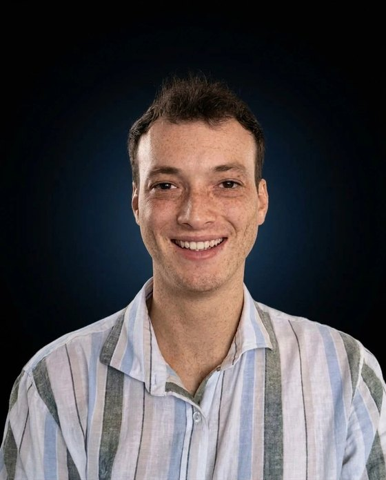
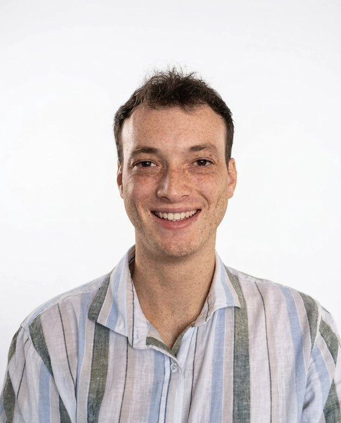

Senior Frontend Engineer, building interfaces people can trust.
Nearly six years building frontend infrastructure other teams depend on: Cisco’s Magnetic design system, the React
component library behind the Meraki Dashboard, and the Dashboard’s most used pages. I enjoy complex, data-heavy
UIs and performance work most, and I own problems from spec to release. This year I also designed and shipped five
products of my own, end to end.


What I bring
Design systemsReact and TypeScript components every Meraki team builds on.
Complex UIData-heavy dashboards, large tables, deeply nested forms.
OwnershipA startup’s whole frontend, OKR epics, problem to release.
AI-native toolingThe review pipeline my team runs on every push.
Experience
All through Vairix, Montevideo
Nov 2023 – Present
Client: Cisco
Frontend Product Engineer Now
Cisco, Magnetic component library
The proactive maintainer of the React and TypeScript library that Meraki teams build on. When leadership needs something, I take it from spec to release.
Non-blocking filtering for data tables with 100k+ rows: the filter runs in short slices that yield to the browser, so typing stays at 60 FPS and matches render as they arrive.
Complex, pixel-perfect data table features built to detailed design specs, the most demanding components in the library.
The team’s AI engineering stack, built in two to three months when AI adoption became an OKR: an AGENTS.md, coding skills with explicit boundaries, and a pre-push hook that runs a breaking-change scanner (designed from every hotfix and revert in the repo’s history) and a review orchestrator with five specialized reviewers. The team still runs it on every push.
Support and mentorship for the hundreds of developers who adopt the library, and the code review standards that keep it stable.
Aug 2022 – Nov 2023
Client: Cisco Meraki
Frontend Engineer, Product Implementation
Cisco Meraki, Meraki Dashboard
Built the Dashboard’s most used data pages (Access Points, Switches, Clients): tables with filtering, sorting and export, tuned for the largest customers’ datasets.
Worked with Cisco’s design team to build and evolve Magnetic, keeping the experience consistent and accessible across the product.
Planned and broke down critical features so several developers could build them in parallel.
Moved teams from legacy UI components to Magnetic while keeping what they had working.
Experience, earlier
Aug 2021 – Jul 2022
Client: Cisco
Frontend Engineer, Design System
Cisco, Magnetic design system
Joined Magnetic while it had its first components and helped take it to its first production release.
Reusable React components with accessibility and performance as the bar, not an afterthought.
Detailed design specs turned into components, working directly with the design team.
Testing and QA for the library’s first production release.
Dec 2020 – May 2021
Client: Device Magic
Frontend Engineer
Device Magic
My first product. I took full ownership of the web frontend after the senior developer left, and took it to its MVP launch.
A dynamic forms engine: unlimited nested blocks, recursive state and real-time expression evaluation.
Large forms made orders of magnitude faster by reworking the algorithms and the rendering.
When the backend switched to an incompatible XML format, a client-side adapter that translated it on the fly instead of a rewrite.
The UI for a webcam barcode scanner: a focused scan area with real-time visual feedback.
Products I shipped this year
Solo, end to end. English and Spanish, light and dark.